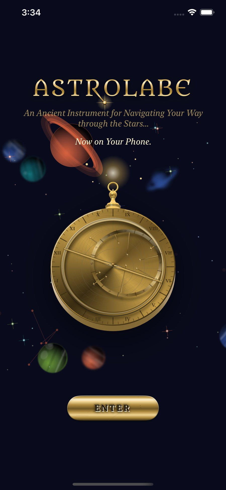
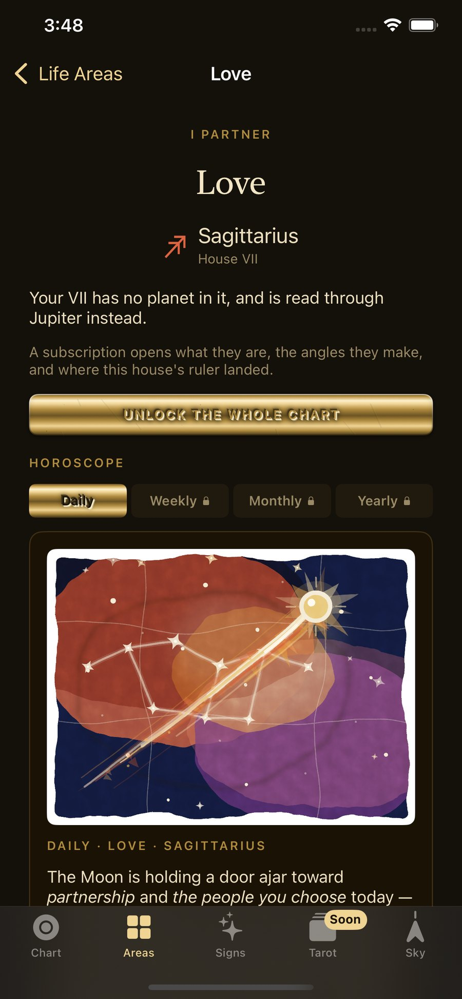
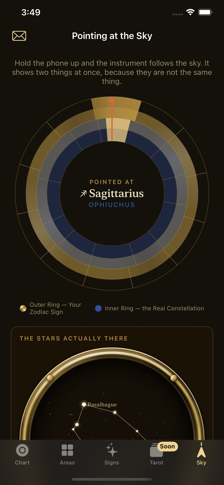
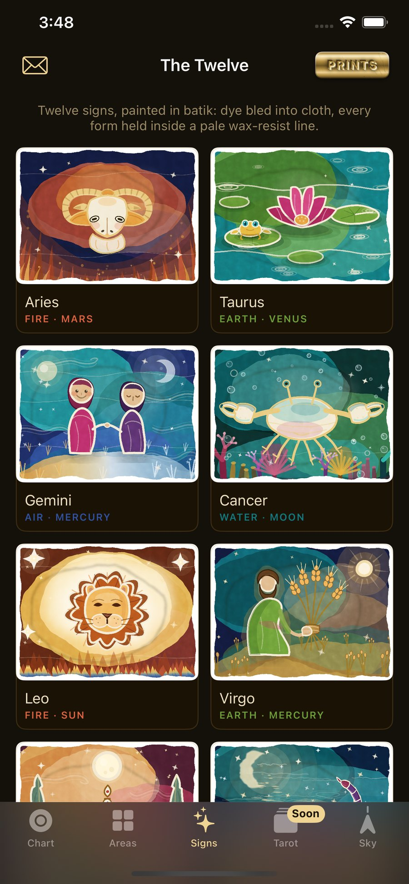
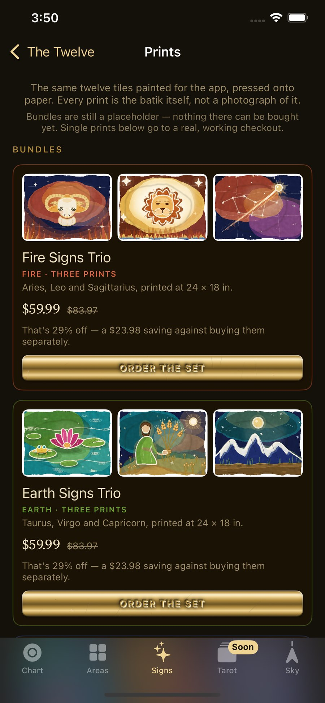
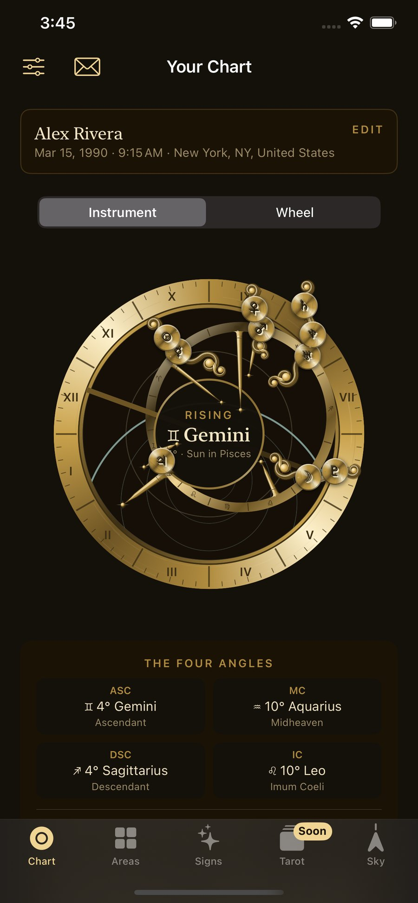

Astrology, Cast in Metal
An Ancient Instrument for Navigating Your Way through the Stars…
Now on Your Phone.
An astrolabe is the oldest computer built for the sky — a brass instrument astronomers and navigators turned by hand for over a thousand years to read the positions of the stars.
Turn it over. Watch the rete track the true positions of the planets at your exact moment of birth, doing real astronomical math the way the instrument always has.

Love, Friends, Career, Home, Spirit, Purpose — laid out from your actual chart, not jargon. What's happening, and what to do about it.
Each reading is drawn straight off your rising sign, your houses, and the planet that rules them — never a generic horoscope written for everyone born under one sign.

Hold your phone up and the instrument follows the sky above you — your zodiac sign shown next to the actual constellation in that direction, because they are not the same thing, and this app is honest about the difference.

Nothing here pretends to be more finished than it is.
What you see working, works. What's still coming is labeled that way — not hidden behind a paywall dressed up as a feature.
Every sign rendered in a warm, wax-resist batik style — generated under the close, wash-by-wash direction of a professional illustrator, not left to run on its own. Worth exploring on their own, and available as real prints on real paper.



Every house, planet, and angle opened out — full advice, not just placement. Plus weekly, monthly, and yearly horoscopes for every life area.
Auto-renewable subscription. Cancel anytime in your device's Settings. See our Privacy Policy for details on what stays on your device.